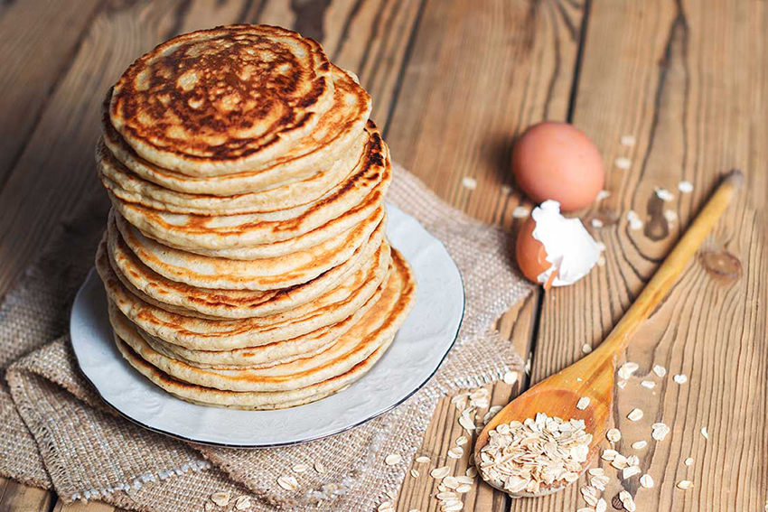

Pancake

Description
A classic recipe for breakfast. If you eat one of these you will start your day full of energy.
It's an easy to do recipe. You can make as much as you want of these and save them on the freezer for future days.
Ingredients
- 2 cup of flaked oats
- 1 1/2 cup of milk
- 1 egg
- 1 banana
- 1 tablespoon of liquid vanilla essence
Steps
- I usually buy instant flaked oats, so you will have to soak it for at least 12 hours on the fridge to activate it. It's not mandatory, but recommended.
- Cut the banana in small pieces to mix with the other ingredients, or better use a potato smasher.
- Mix all the ingredients in a bowl. You can also put them in a mixer or a blender to shred them better.
- Turn on a stove
- Fill a skillet with a small amount of the mixture and cook it for 2 to 4 minutes until golden
- Flip the pancakes and wait for other 2 minutes and they are ready!!!